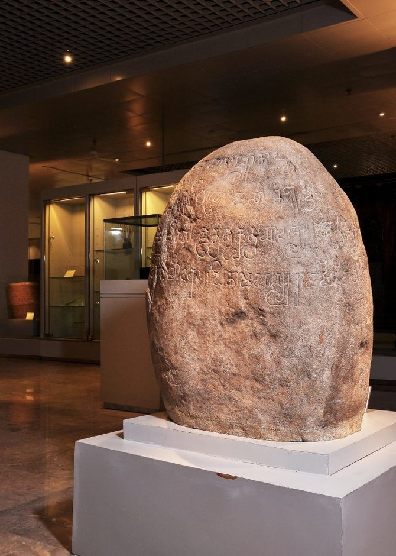

Kerajaan Hindu tertua lainnya adalah Kerajaan Tarumanagara. Letaknya di wilayah Jawa Barat sekarang. Hal ini dibuktikan dengan adanya sejumlah prasasti di daerah sekitar Bogor (Prasasti Ciaruteun, Kebon Kopi, Jambu, Pasir Awi, dan Prasasti Muara Cianten), Prasasti Tugu di Cilincing (Jakarta Utara), dan Prasasti Cidanghiang di Desa Lebak, Banten.
Kerajaan ini diperkirakan ada sejak abad V, sezaman dengan Kerajaan Kutai. Hal ini diperkuat oleh berita Tiongkok yang menyebut kerajaan To-Lo-Mo (Tarumanagara) mengirimkan utusan ke Tiongkok pada tahun 528, 538, 665, dan 666 M untuk sebuah kunjungan persahabatan yang didasari hubungan dagang. To-Lo-Mo disebutkan terletak di sebelah tenggara Tiongkok.
Kata taruma berasal dari kata torum yang berarti nila. Sampai sekarang, nama ini masih dapat kita jumpai sebagai nama sungai, yaitu Sungai Citarum. Raja yang memerintah bernama Purnawarman. Sama dengan raja-raja di Kutai, Purnawarman adalah asli orang Indonesia yang menggunakan nama India dan memeluk Hindu. Menurut Prasasti Tugu, wilayah kekuasaannya meliputi hampir seluruh Jawa Barat, yaitu membentang dari Banten, Jakarta, Bogor, hingga Cirebon.Gambaran kondisi sosial-politik Kerajaan Tarumanagara didapat melalui tinggalan prasasti-prasasti. Dalam Prasasti Ciaruteun atau Prasasti Ciampea tertulis:
"Inilah (tanda) sepasang telapak kaki yang seperti kaki Dewa Wisnu ialah telapak yang mulia sang Purnawarman, raja di negeri Taruma, raja yang gagah berani di dunia."Cap telapak kaki melambangkan kekuasaan atau penaklukan raja atas daerah tempat ditemukannya prasasti tersebut. Raja Purnawarman diibaratkan Dewa Wisnu (dewa pemelihara alam semesta), yang menunjukkan pada masa itu rakyat menganggap Raja Purnawarman sebagai pemelihara dan pelindung rakyat. Tulisan ini juga menggambarkan pemerintahan di Kerajaan Tarumanagara telah menerapkan konsep dewa raja: raja yang memerintah disamakan dengan Dewa Wisnu.
Dalam Prasasti Kebon Kopi, terdapat gambar tapak kaki gajah, yang disamakan dengan gajah Airawata, atau gajah kendaraan Dewa Wisnu. Sayangnya, sebagian isi prasasti ini tidak terbaca. Prasasti Tugu merupakan prasasti terpanjang dan terpenting dari Raja Purnawarman. Tulisan yang ada di atas batu dapat dibaca secara melingkar, yang isinya antara lain menyebutkan tentang pembangunan saluran air yang panjangnya 6.112 tombak (setara dengan 11 km) yang diberi nama Gomati. Saluran ini dibuat ketika Raja Purnawarman telah memerintah selama 22 tahun dan diselesaikan hanya dalam waktu 21 hari. Selain itu, prasasti ini juga menyebutkan tentang penggalian Sungai Candrabagha, menurut para ahli sama dengan Sungai Bekasi sekarang. Bekasi berasal dari kata baghasasi, sedangkan candra berarti bulan atau sasi. Sangat dimungkinkan penggalian sungai ini adalah untuk mengatasi masalah banjir, serta untuk mengairi sawah pada musim kemarau. Berikut kutipan terjemahan lengkap prasasti tersebut:
"Dahulu sungai bernama Candrabhaga telah digali oleh maharaja yang mulia dan yang memiliki lengan kencang serta kuat yakni Purnawarman, untuk mengalirkannya ke laut, setelah kali (saluran sungai) ini sampai di istana kerajaan yang termasyhur. Pada tahun ke-22 dari takhta Yang Mulia Raja Purnawarman yang berkilau-kilauan karena kepandaian
dan kebijaksanaannya serta menjadi panji-panji segala raja raja, (maka sekarang) beliau pun menitahkan pula menggali kali (saluran sungai) yang permal dan berair jernih Gomati namanya, setelah kali (saluran sungai) tersebut mengalir melintas di tengah-tengah tanah kediaman Yang Mulia Sang Pendeta Nenekda (Raja Purnawarman), Pekerjaan ini dimulai pada hari baik, tanggal 8 paro-gelap bulan Phalguna dan selesai pada tanggal 13 parah terang bulan Caitra, jadi hanya berlangsung 21 hari lamanya, sedangkan saluran galian tersebut panjangnya 6.122 tombak. Selamatan baginya dilakukan oleh para brahmana disertai 1.000 ekor sapi yang dihadiahkan."
Dari prasasti-prasasti tersebut, dapat kita ketahui pada masa itu di Jawa Barat telah terdapat sebuah kerajaan yang besar dan cukup makmur, serta penduduknya hidup dari hasil pertanian.
Pada akhir masa pemerintahan raja Tarumanagara yang terakhir, Sri Maharaja Linggawarman (memerintah 666-669 M), Kerajaan Tarumanagara pecah menjadi dua, yaitu Kerajaan Sunda, yang merupakan kelanjutan dari Kerajaan Tarumanagara di bawah kekuasaan menantunya bernama Tarusbawa, dan Kerajaan Galuh di bawah Wretikandayun. Baik Sunda maupun Galuh sebelumnya merupakan kerajaan bawahan Tarumanagara. Kelak di bawah Sanjaya (putra Sanna raja ketiga Galuh), kedua kerajaan ini dipersatukan kembali (tahun 732 M). Sanjaya menjadi pewaris takhta ibunya (Sanaha) di Bumi Mataram (Kalingga utara), yang kelak melahirkan Kerajaan Mataram Kuno, sedangkan Galuh, Sunda, Kuningan, dan Galunggung dibagi kepada dua orang putra hasil perkawinannya dengan putri dari Tarusbawa). Di Mataram, Sanjaya mewariskan takhta kepada putranya Rakai Panangkaran, hasil perkawinannya dengan Dewi Sudiwara, yaitu putri Dewasinga penguasa Kalingga selatan allas Bumi Sambara

- Deskripsi
Judul: Prasasti Tugu
Tahun: Sekitar abad ke-5 M (perkirakan sekitar 450 M)
Seniman: Tidak diketahui secara spesifik, namun prasasti ini dibuat pada masa pemerintahan Raja Purnawarman, raja kerajaan Tarumanegara.
Teknik: Ukiranb
Bahan: Batu andesit
Prasasti Tugu adalah salah satu prasasti yang ditemukan di sekitar wilayah Tugu, Jakarta, dan berhubungan dengan kerajaan Tarumanegara, sebuah kerajaan Hindu yang berkuasa di wilayah Jawa Barat pada abad ke-5. Prasasti ini berfungsi sebagai dokumen yang mencatatkan informasi terkait dengan kegiatan kerajaan dan kebesaran Raja Purnawarman. Sebagai prasasti, karya ini memiliki tujuan untuk mengukuhkan kekuasaan dan prestasi pemerintahan raja.
- Analisis Formal
Objek: Prasasti Tugu berisi tulisan yang diukir dalam aksara Pallawa, yang merupakan aksara kuno yang digunakan dalam prasasti-prasasti India dan Asia Tenggara pada masa itu. Tulisan ini mengandung teks yang menceritakan tentang pencapaian Raja Purnawarman, serta penanaman sungai yang dilakukan oleh raja untuk meningkatkan kesejahteraan rakyatnya.
Warna: Sebagai prasasti yang terbuat dari batu andesit, warna alami batu ini adalah abu-abu gelap dengan sedikit kekuningan. Seiring waktu, warna asli batu ini telah pudar, namun masih terlihat jelas dalam ukiran tulisan yang kontras dengan latar belakang batu.
Bentuk: Prasasti ini berbentuk persegi panjang vertikal dengan ukiran yang terdiri dari beberapa baris tulisan. Secara keseluruhan, bentuknya cukup sederhana, dengan fokus utama pada teks yang diukir dengan presisi.
Komposisi: Komposisi prasasti ini lebih difokuskan pada struktur teks yang tertulis secara teratur dalam beberapa baris, tanpa adanya ornamen atau gambar tambahan. Ukiran teks diatur dengan rapi, dan ada penggunaan ruang yang cukup efisien untuk menampung informasi secara jelas dan terstruktur.
- Interpretasi
Makna: Prasasti Tugu mencatatkan tindakan Raja Purnawarman yang mengarahkan pembangunan saluran air atau irigasi dan penanaman sungai untuk kepentingan rakyatnya. Tindakan ini bukan hanya merupakan langkah besar dalam pembangunan infrastruktur, tetapi juga menjadi simbol kebijaksanaan dan perhatian seorang raja terhadap kesejahteraan rakyatnya. Sebagai prasasti, karya ini juga berfungsi sebagai legitimasi politik untuk memperkuat posisi Raja Purnawarman sebagai pemimpin yang bijaksana.
Simbol: Prasasti ini adalah simbol dari kekuasaan, kebesaran, dan prestasi Raja Purnawarman. Selain itu, simbol penting dalam prasasti ini adalah saluran air atau sungai yang disebutkan, yang mewakili kemampuan raja dalam mengelola sumber daya alam untuk kepentingan rakyat. Saluran air ini bisa dilihat sebagai simbol kelimpahan dan keberlanjutan yang membawa manfaat bagi masyarakat.
Maksud Pembuatan Karya: Tujuan utama pembuatan prasasti ini adalah untuk mengabadikan prestasi Raja Purnawarman dan mengukuhkan nama raja tersebut dalam sejarah. Selain itu, prasasti ini juga memiliki fungsi sosial dan politik, yaitu untuk menunjukkan kepada rakyat dan kerajaan lainnya tentang prestasi dan kebijakan raja, serta memperlihatkan kedudukan dan kekuasaan politik yang dimilikinya.
- Evaluasi
Penilaian Positif (Baik):
Dokumentasi Sejarah yang Berharga: Prasasti Tugu memberikan informasi yang sangat penting mengenai kerajaan Tarumanegara dan Raja Purnawarman. Sebagai salah satu prasasti tertua di Indonesia, ia memberikan wawasan tentang perkembangan sosial, politik, dan budaya pada masa tersebut
.png)